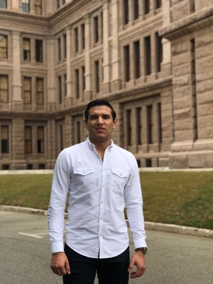

My story begins in Tamaulipas, Mexico. More specifically, in Ciudad Victoria.
I was born on the 9th of March in 1999. Up until I was 15, I never pictured myself living anywhere else.
My family decided to send my sister and I to the United States in hopes to start construing what was, one day, going to be our future. The move happened very quickly.
By the time I knew it, I was practically living on my own at 15.
The move was very traumatic for me, but I am beyond grateful for what my life is today.
Unlike for most people, high school was life changing for me. I struggled with English, since it wasn’t my first language.
I am proud to say that over the years, my English has drastically improved. I became involved in sports and built important friendships.
More importantly, I met people who genuinely wanted to see me succeed and achieve my goals.
After contemplating many universities, Texas A&M is where I decided to attend.
The fact that I was accepted into the university was a great accomplishment for me. I knew this was where my future was commencing.
I have to say the past three years of my life at Texas A&M have taught me the most, not only for my engineering career, but more so about myself.
Now that I am 21 years old and a junior majoring in Mechanical Engineering, I can say that I have become a determined, organized, and passionate person.
Whatever task or assignment I am given, I set my eyes on it and get it done by putting in the work. I always try to be the best. Daily, I follow two mottos.
First, "Never leave anything for tomorrow." If you can get it done today, do it as soon as possible. The second one is, "If you are going to do something, you better do it right."
These two mottos, passed down to me by my father, have helped me become the student, and most importantly the person, I am today.
By applying these principles everyday, I always achieve my goals.